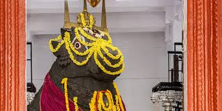

South Bangalore is an active and growing part of the Indian city of Bangalore. It is one of the most crowded places in Bangalore for people who want to live in comfort and benefit because it has both residential and business areas. South Bangalore is known for its good transportation, top-notch schools, rich cultural history, variety of food, green spaces, and growing real estate market. In this blog, we'll discuss each of these things in-depth to find out what makes South Bangalore such a unique and desirable place to live. South Bangalore is in a good place and has well linked to other parts of the city, which makes it a great place to live for people who need to get to work or other parts of the city. In this area, there are the Kempegowda International Airport, Bangalore City Railway Station, and Kempegowda Bus Station, some of the city's most important transportation hubs. Bangalore's fast-transportation system, the Namma Metro, has also grown to cover more of South Bangalore. People will find it easier to move around South Bangalore and the rest of the city. Bangalore's most beautiful and large parks and green spaces are in the city's south. This gives people a lot of places to relax and enjoy nature. The Lalbagh Botanical Garden, Cubbon Park, and Bannerghatta National Park are some of the most popular places to go outside in the area. The Lalbagh Botanical Garden is 240 acres and has more than 1,800 different kinds of plants and trees. Cubbon Park is in the middle of the city and is a great place to run in the morning or have a picnic with family and friends. Bannerghatta National Park is on the edge of the town. It is home to tigers, lions, and elephants, among other animals.
|
|
|  | |